Queijada de amendoim, Mário de Andrade e a Festa do Interior
Uma conversa sobre o poema O Poeta Come Amendoim, de Mário de Andrade, a queijada de amendoim e o menu-degustação do Tio Dinho harmonizado com literatura, Festa do Interior.
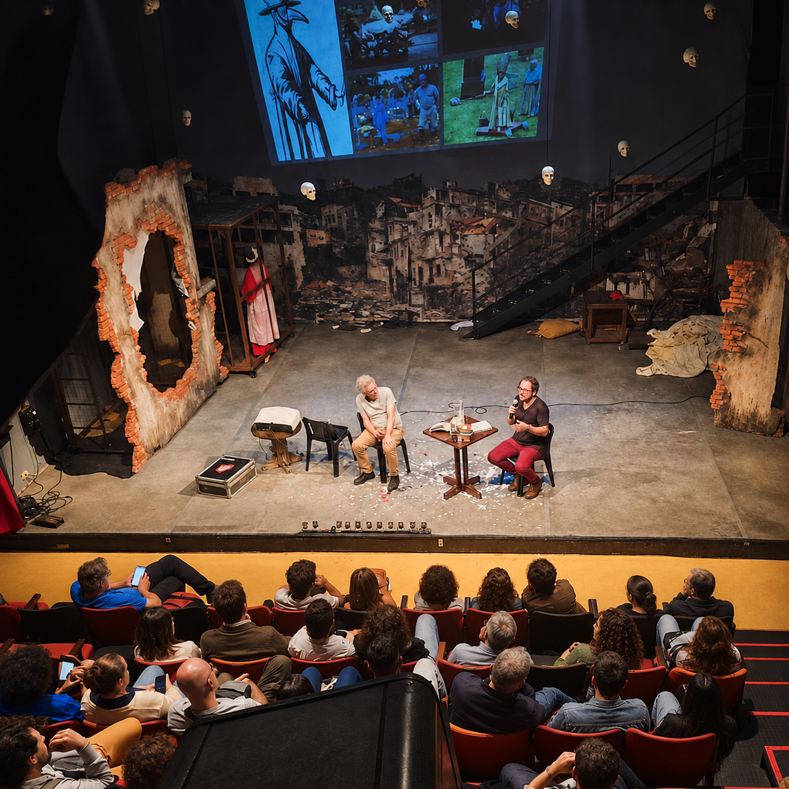
Palestras que inspiram, educam e motivam a partir da literatura e da gastronomia, para pensar convivência, sustentabilidade, marca, liderança e hospitalidade.
Solicitar propostaThiago Villela Basile é chef de cozinha e doutor em Letras pela USP, com intercâmbio na Itália, onde aproveitou para cursar um curso básico de gastronomia pela Scuola Girassole, em Modena. É mestre em Teoria e História Literária e bacharel em Estudos Literários pela Unicamp, pós-graduado em Gestão de Negócios em Gastronomia pela Anhembi Morumbi e pesquisador do Grupo de Estudos Os Sentidos Como Alimento (GEOSCA), registrado no CNPq. Publicou estudos sobre Boccaccio no Brasil e na Itália.
É chef e fundador do Tio Dinho, restaurante de cozinha caipira contemporânea em Sousas, Campinas. O nome homenageia o avô, um caipira que deixou o interior rumo a São Paulo; décadas depois, o neto fez o caminho de volta. Também criou a Paulistânia Desvairada, projeto de experiências culturais e gastronômicas. É autor de "À Mesa: texto teatral, ensaio e receitas para um Teatro de Comer" (Caravana Grupo Editorial, 2026), em que propõe o Teatro de Comer, gênero teatral em que a comida também narra a história.
Nas palestras, a obra conduz a conversa: Boccaccio e Epicuro, Lobato e Drummond, Oswald e Mário de Andrade, a cena que acontece à mesa. A experiência da cozinha mostra que essas ideias são viáveis na prática. A plateia sai inspirada, com repertório e ainda mais vontade de ler.
Uma conversa sobre o poema O Poeta Come Amendoim, de Mário de Andrade, a queijada de amendoim e o menu-degustação do Tio Dinho harmonizado com literatura, Festa do Interior.
Thiago apresenta o manjar de cumaru, receita publicada no livro À Mesa, e conversa sobre o Teatro de Comer, gênero teatral em que a comida também narra a história.
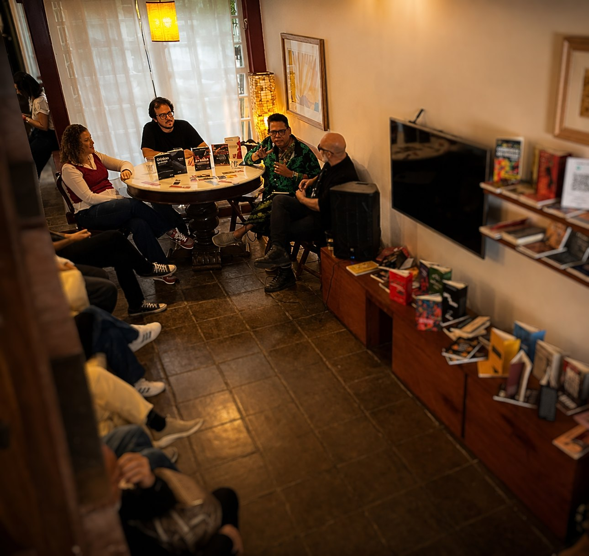
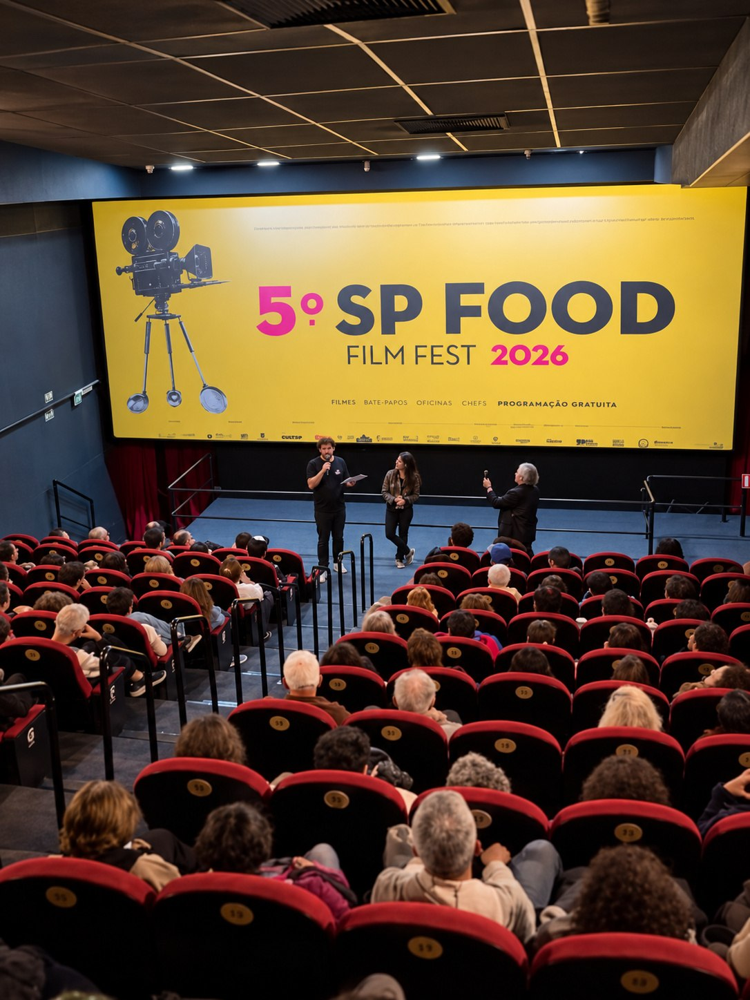
Boccaccio e Epicuro à mesa: liderança e convivência, para gestores e equipes.
Conhecer a palestra →O desenvolvimento de que precisamos? Sustentabilidade e economia com respeito à terra, ao povo e à cultura.
Conhecer a palestra →O que faz uma marca ser brasileira: identidade, inovação e repertório para marcas e produtos.
Conhecer a palestra →O Teatro de Comer para quem recebe pessoas.
Conhecer a palestra →Além das palestras acima, é possível combinar outros temas e formatos a partir de uma conversa de briefing com a empresa ou instituição, sempre dentro dos eixos em que Thiago pesquisa e atua: literatura, filosofia, gastronomia e cultura brasileira.
Conversar sobre um tema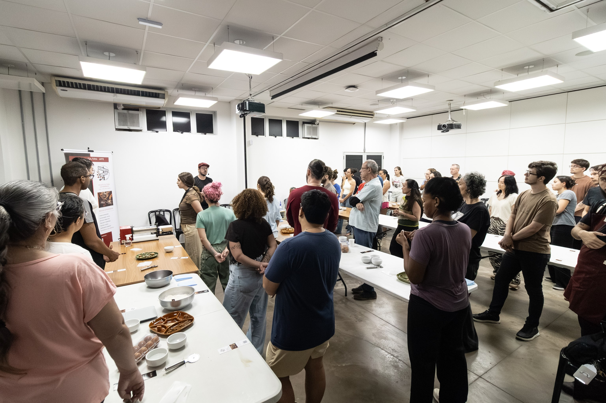
Além das palestras, a Paulistânia Desvairada cria experiências culturais e gastronômicas para empresas: encontros à mesa, oficinas e vivências que unem comida, literatura e arte.
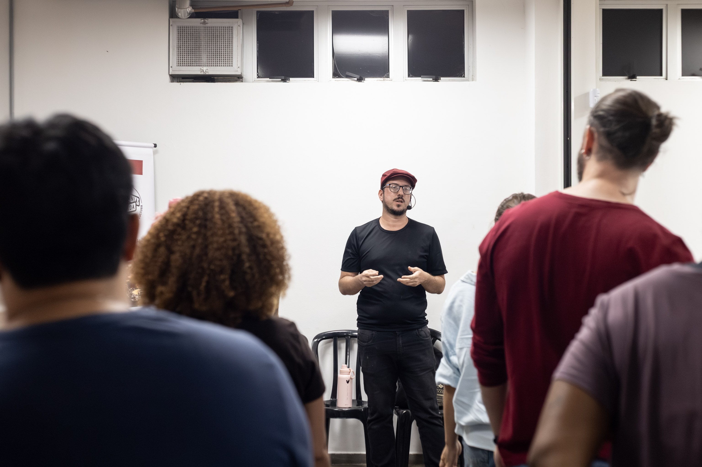
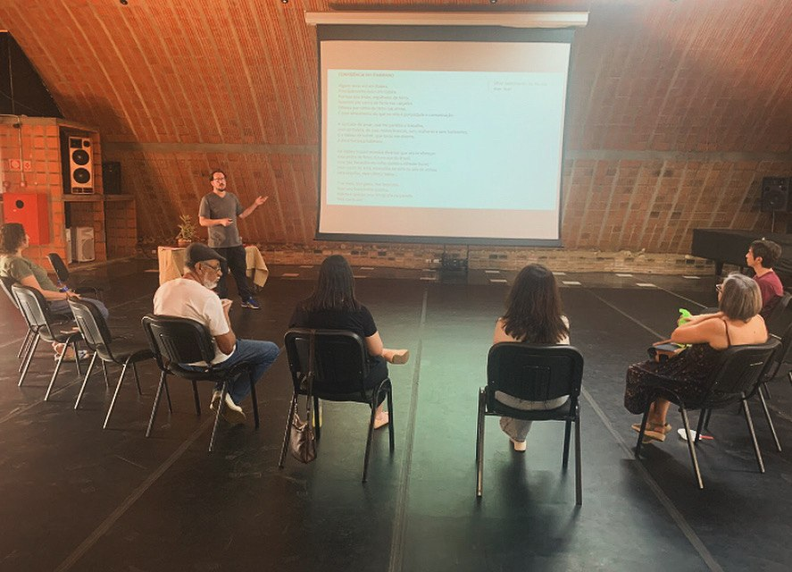
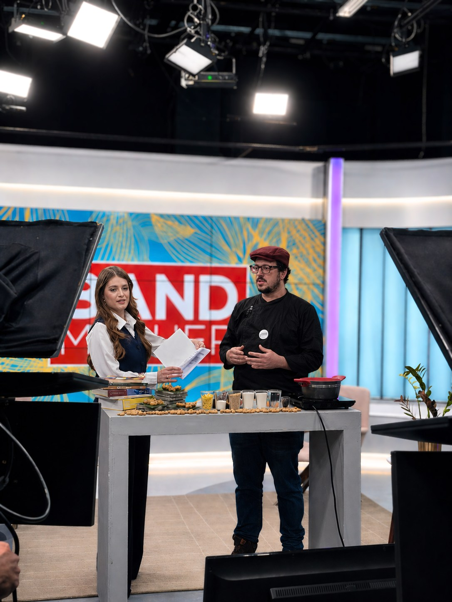
.jpg)
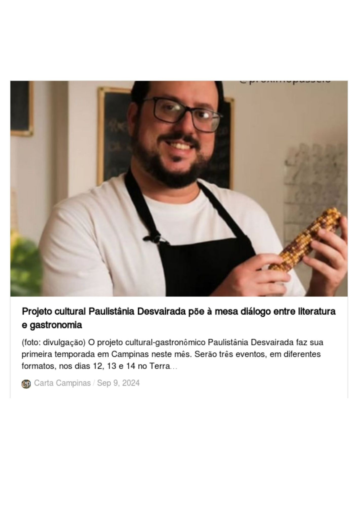


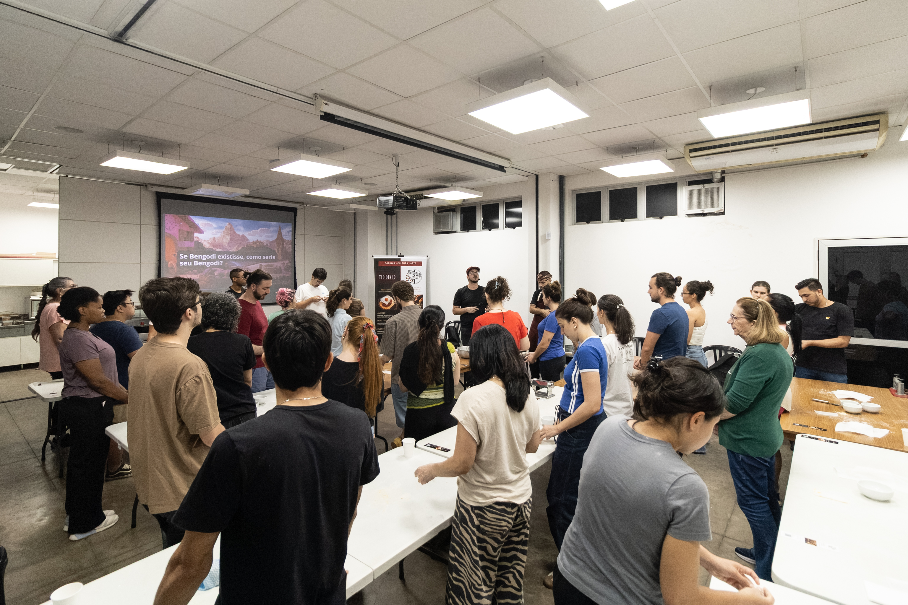

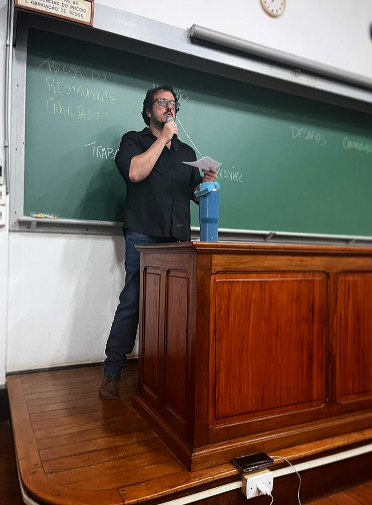
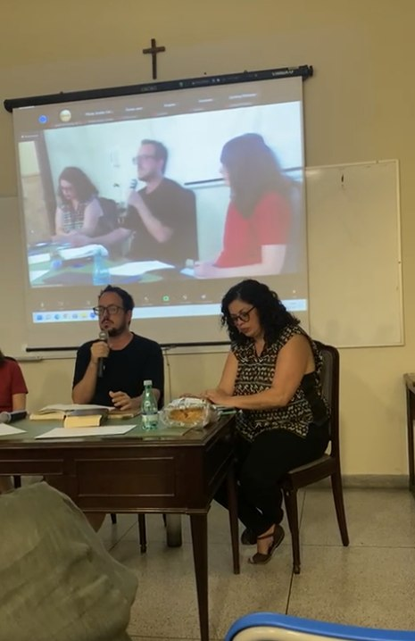
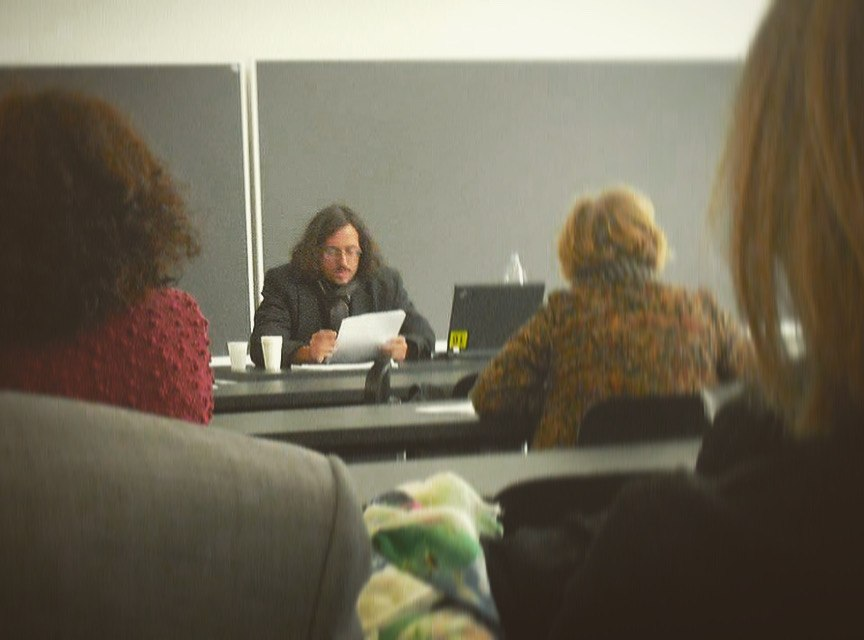
Literatura, gastronomia e cultura em teatros, universidades, festivais e encontros com o público.
Uma conversa de briefing ajuda a combinar tema, ênfase e formato.